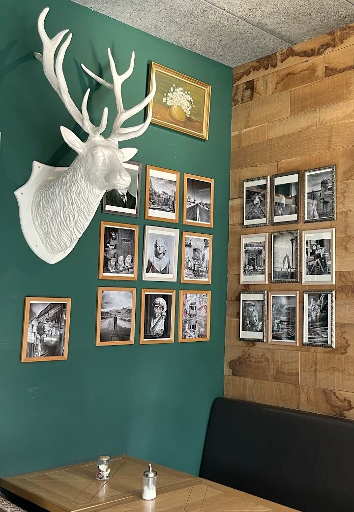
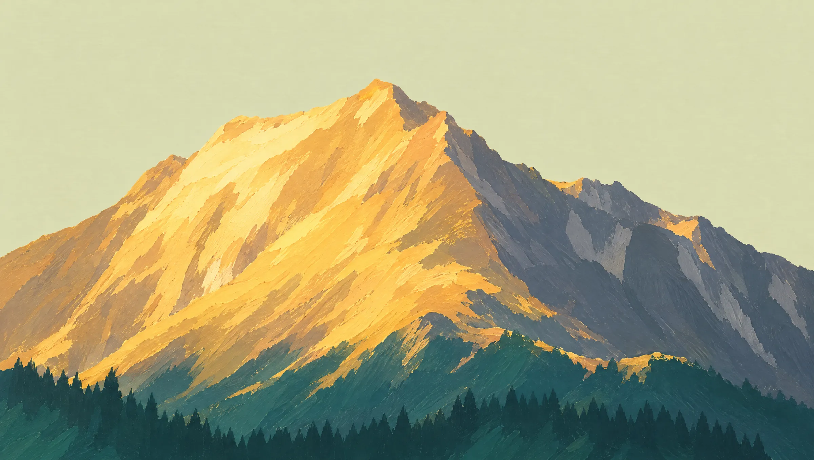

MontChalet · À la façon des chalets du Tyrol du Sud
Bistro • Brasserie • Biergarten
6 Am Duerf, Dudelange · Tous les jours 09:00–00:00, ven. et sam. jusqu’à 01:00

You are not in the mountains. The mountains are in you.
Commencer la journée en douceur, de la meilleure des façons.
Un café frais, des coins paisibles et la beauté tranquille d’un nouveau matin.
Sundays at the ChaletBrunch, chaque dimanche, 11:00–15:00
Bienvenue à la terrasse Mont ChaletSun, terrace views, and the perfect vibe.
Des saveurs à découvrir, des instants à savourer.